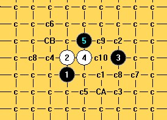

大峡月又一个8求杀
#1 大峡月又一个8求杀 作者：哥哥哥哥三二一 发表时间：2014-1-13 10:52:17

白棋的这个8或6求杀~~~小弟菜鸟~~又来请教难题了~
#2 Re:大峡月又一个8求杀 作者：日月丽天 发表时间：2014-1-13 17:22:37
楼主人呢？你是不是觉得你这个唯一8问题后面让人做起来太猥琐了？#3 Re:大峡月又一个8求杀 作者：日月丽天 发表时间：2014-1-13 18:11:46
正确的必胜7是这里：
这7你先试一试，这题算解决，再换题看看
［ 失落刀 于 2014-1-13 19:11:38 时奖励此帖[金币加 100 威望加1］
#4 Re:日月丽天【==Re:大峡月又一个8求杀==】 作者：哥哥哥哥三二一 发表时间：2014-1-14 6:35:45
引用：
原文由 日月丽天 发表于 2014-1-13 18:11:46 :正确的必胜7是这里：
这7你先试一试，这题算解决，再换题看看
按你给出的7，基本杀了，只差没有解决掉这个唯一12 - -~~~~~ 请教这里要怎么杀的
［此帖子已被 哥哥哥哥三二一 在 2014-1-14 6:37:04 编辑过］
#5 Re:日月丽天【==Re:大峡月又一个8求杀==】 作者：哥哥哥哥三二一 发表时间：2014-1-14 6:43:09
引用：
原文由 日月丽天 发表于 2014-1-13 18:11:46 :这7你先试一试，这题算解决，再换题看看
好吧，下一个强6里也有一个12没杀出来
［此帖子已被 哥哥哥哥三二一 在 2014-1-14 7:09:40 编辑过］
#6 Re:大峡月又一个8求杀 作者：日月丽天 发表时间：2014-1-14 8:48:25

 通大峡月又一6地毯.rar
通大峡月又一6地毯.rar
［ 哥哥哥哥三二一同学于 2014-1-14 9:06:14 时花20金币送鲜花一朵］
［ 小帮帮同学于 2014-6-1 23:59:12 时花20金币送鲜花一朵］
#7 Re:哥哥哥哥三二一【==Re:日月丽天【==Re:大峡月又一个8求杀==】==】 作者：哥哥哥哥三二一 发表时间：2014-1-14 9:05:51
引用：
佩服~~~~这个6也被你杀掉了哦。这里有下一个强6唯一顽强抵抗的12，这个12太难杀了 。
。

下一个难题是上面的12。
［此帖子已被 哥哥哥哥三二一 在 2014-1-14 11:52:20 编辑过］
［此帖子已被 哥哥哥哥三二一 在 2014-1-14 11:53:30 编辑过］
#8 Re:大峡月又一个8求杀 作者：日月丽天 发表时间：2014-1-15 11:09:39
你还有哪些白14？
#9 Re:日月丽天【==Re:大峡月又一个8求杀==】 作者：哥哥哥哥三二一 发表时间：2014-1-16 14:04:30
引用：
原文由 日月丽天 发表于 2014-1-15 11:09:39 :你还有哪些白14？
今天开始扫了一下别的14，只剩下这2个14：

---------------------------------

其中一个14，差一个18
#10 Re:大峡月又一个8求杀 作者：日月丽天 发表时间：2014-1-16 15:44:54
不在于还剩余有唯一唯二白点，就在于这样的剩余白点后面有没有被地毯的可行性
这个跳14后，黑棋也剩余唯一15是活三，后面比划了下，黑棋还有一些外势，但杀必胜做地毯非常不易。
如果这样地毯没有希望的话，只有再寻求前面还没有其他方法吧
#11 Re:日月丽天【==Re:大峡月又一个8求杀==】 作者：逆刃 发表时间：2014-1-16 18:02:07
换个9，简单杀啦。
大残月败8.rar
［ 日月丽天同学于 2014-1-16 18:21:33 时花20金币送鲜花一朵］
［ 日月丽天同学于 2014-1-16 18:21:33 时花20金币送鲜花一朵］
［ 日月丽天同学于 2014-1-16 18:21:33 时花20金币送鲜花一朵］
［ 日月丽天同学于 2014-1-16 18:21:33 时花20金币送鲜花一朵］
［ 日月丽天同学于 2014-1-16 18:21:33 时花20金币送鲜花一朵］
［ 日月丽天同学于 2014-1-16 18:21:33 时花20金币送鲜花一朵］
［ 日月丽天同学于 2014-1-16 18:21:33 时花20金币送鲜花一朵］
［ 日月丽天同学于 2014-1-16 18:21:33 时花20金币送鲜花一朵］
［ 日月丽天同学于 2014-1-16 18:21:33 时花20金币送鲜花一朵］
［ 日月丽天同学于 2014-1-16 18:21:33 时花20金币送鲜花一朵］
［ 哥哥哥哥三二一同学于 2014-1-16 18:52:56 时花20金币送鲜花一朵］
［ 平凡人生同学于 2014-1-17 15:14:12 时花20金币送鲜花一朵］
［ 平凡人生同学于 2014-1-17 15:14:12 时花20金币送鲜花一朵］
［ 平凡人生同学于 2014-1-17 15:14:12 时花20金币送鲜花一朵］
#12 Re:大峡月又一个8求杀 作者：日月丽天 发表时间：2014-1-16 18:26:25
还是逆刃老师高明
这么说溪月开局，白应理论强4，黑5走八卦，白6踩八卦防是白必败了
楼主这题出的能地毯出来很有意义
#13 Re:大峡月又一个8求杀 作者：中原一点红 发表时间：2014-1-17 7:02:10
想问楼主：“这个5还有几个6没终结了？分别是哪几个6？”#14 Re:大峡月又一个8求杀 作者：日月丽天 发表时间：2014-1-17 8:27:44
楼主不知道又跑哪去玩去了，如果不先问的话也要想到还有哪些强6，这些天出的题都还不是最强6或次强6.
大家对这个6有什么见解？
［此帖子已被 日月丽天 在 2014-1-17 8:57:09 编辑过］
#15 Re:大峡月又一个8求杀 作者：日月丽天 发表时间：2014-1-17 8:33:37
还有这个6，次强些。白进攻多。
［此帖子已被 日月丽天 在 2014-1-17 8:42:56 编辑过］
#16 Re:大峡月又一个8求杀 作者：日月丽天 发表时间：2014-1-17 8:36:42
特别是这两个6，能有希望的话，这个5就会有希望，否则就是镜花水月。［此帖子已被 日月丽天 在 2014-1-17 8:44:35 编辑过］
#17 Re:大峡月又一个8求杀 作者：平凡人生 发表时间：2014-1-17 15:15:50
#18 Re:大峡月又一个8求杀 作者：日月丽天 发表时间：2014-1-17 15:37:51
这个8杀法。
中间8，你等楼主给你解答吧
［ 平凡人生同学于 2014-1-18 7:54:07 时花20金币送鲜花一朵］
［ 平凡人生同学于 2014-1-18 7:54:07 时花20金币送鲜花一朵］
［ 平凡人生同学于 2014-1-18 7:54:07 时花20金币送鲜花一朵］
#19 Re:平凡人生【==Re:大峡月又一个8求杀==】 作者：哥哥哥哥三二一 发表时间：2014-1-18 0:24:14
引用：
原文由 平凡人生 发表于 2014-1-17 15:15:50 :这2个8不会杀，求教。
我个人地毯的下法是这样的：

#20 Re:中原一点红【==Re:大峡月又一个8求杀==】 作者：哥哥哥哥三二一 发表时间：2014-1-18 0:29:28
引用：
原文由 中原一点红 发表于 2014-1-17 7:02:10 :
想问楼主：“这个5还有几个6没终结了？分别是哪几个6？”
基本快终结了，除了CB的分支里没彻底杀完（也快了，主要现在我没时间用在这里了，CB里最强主线几条已经被杀掉了，除了另外几个强8没地毯），别的地方可能还有些BUG。
这个5强6到处是，普通6也不见得好杀（对我这菜鸟来说，呵呵）。特别感谢这里的各位大大（日月丽天，山城刀客，逆刃）杀掉了一些强支。
最近忙了，不得不离开一段时间。我想以后有机会我会把谱在论坛里分享出来~~~

这个形状可下成溪峡月新5（在溪月中由右边的3换成5的话带出了外围优势），还与大残月，大峡月的顽强4互通，这个互通的形状~~~
［此帖子已被 哥哥哥哥三二一 在 2014-1-18 0:44:10 编辑过］
［ 平凡人生同学于 2014-1-18 7:56:14 时花20金币送鲜花一朵］
［ 平凡人生同学于 2014-1-18 7:56:14 时花20金币送鲜花一朵］
［ 平凡人生同学于 2014-1-18 7:56:14 时花20金币送鲜花一朵］
［ 日月丽天 于 2014-1-18 8:28:49 时奖励此帖[金币加 100 威望加1］
#21 Re:大峡月又一个8求杀 作者：日月丽天 发表时间：2014-1-18 8:38:17
你的这图上看，以c为败的标记情况说，做的还是非常强的，也非常不简单的。
我觉得强的6应该是活三6和2左斜上6地毯起来难。
#22 Re:日月丽天【==Re:大峡月又一个8求杀==】 作者：哥哥哥哥三二一 发表时间：2014-1-18 9:45:57
引用：
原文由 日月丽天 发表于 2014-1-18 8:38:17 :你的这图上看，以c为败的标记情况说，做的还是非常强的，也非常不简单的。
我觉得强的6应该是活三6和2左斜上6地毯起来难。

2左斜上的是CB，这个我承认哦↑。恭请各位有能力有时间耐心的高手劳驾，请帮忙在此把它彻底杀掉~~
我个人认为比CB难的CA强6点已经被逆刃大大漂亮的给掩杀掉了~小弟在此献花~~~
感谢丽天版主奖励的第5个威望，我现在可以发论坛附件了，(*^__^*) 呵呵…~~

2个活3的6，如果有问题可以在这里发出来嘛，你觉得是哪个8难呢？很早前做的，快没印象了，我记得也是不容易的，也是一个强6呢，呵呵~
［此帖子已被 哥哥哥哥三二一 在 2014-1-18 9:57:27 编辑过］
［ 日月丽天 于 2014-1-18 10:22:27 时奖励此帖[金币加 100 威望加1］
［ 日月丽天同学于 2014-1-18 10:41:19 时花20金币送鲜花一朵］
［ 日月丽天同学于 2014-1-18 10:41:19 时花20金币送鲜花一朵］
［ 日月丽天同学于 2014-1-18 10:41:19 时花20金币送鲜花一朵］
［ 日月丽天同学于 2014-1-18 10:41:19 时花20金币送鲜花一朵］
［ 日月丽天同学于 2014-1-18 10:41:19 时花20金币送鲜花一朵］
［ 逆刃同学于 2014-1-18 14:39:00 时花20金币送鲜花一朵］
#23 Re:大峡月又一个8求杀 作者：日月丽天 发表时间：2014-1-18 11:45:23
［此帖子已被 日月丽天 在 2014-1-18 11:47:10 编辑过］
#24 Re:大峡月又一个8求杀 作者：逆刃 发表时间：2014-1-18 15:15:10
CB那个6也就两个8强点，最强的应该是活三6，比较繁琐，如果这两个6已经地毯了的话应该就差不多了。
#25 Re:大峡月又一个8求杀 作者：日月丽天 发表时间：2014-1-18 15:58:14
楼主在不，这两个8，难度怎么样？
#26 Re:大峡月又一个8求杀 作者：日月丽天 发表时间：2014-1-18 17:35:57
6上面跳8可以了，不用回答了。6上面8地毯是个体力活
#27 Re:大峡月又一个8求杀 作者：中原一点红 发表时间：2014-1-24 9:41:42
高手们给指点一下，怎么杀？
#28 Re:大峡月又一个8求杀 作者：业余九级菜手 发表时间：2014-1-25 23:54:47
这两个11都可以解决，附分支。
xxx.rar
［此帖子已被 业余九级菜手 在 2014-1-25 23:55:49 编辑过］
［ 日月丽天同学于 2014-1-26 8:33:56 时花20金币送鲜花一朵］
［ 日月丽天同学于 2014-1-26 8:33:56 时花20金币送鲜花一朵］